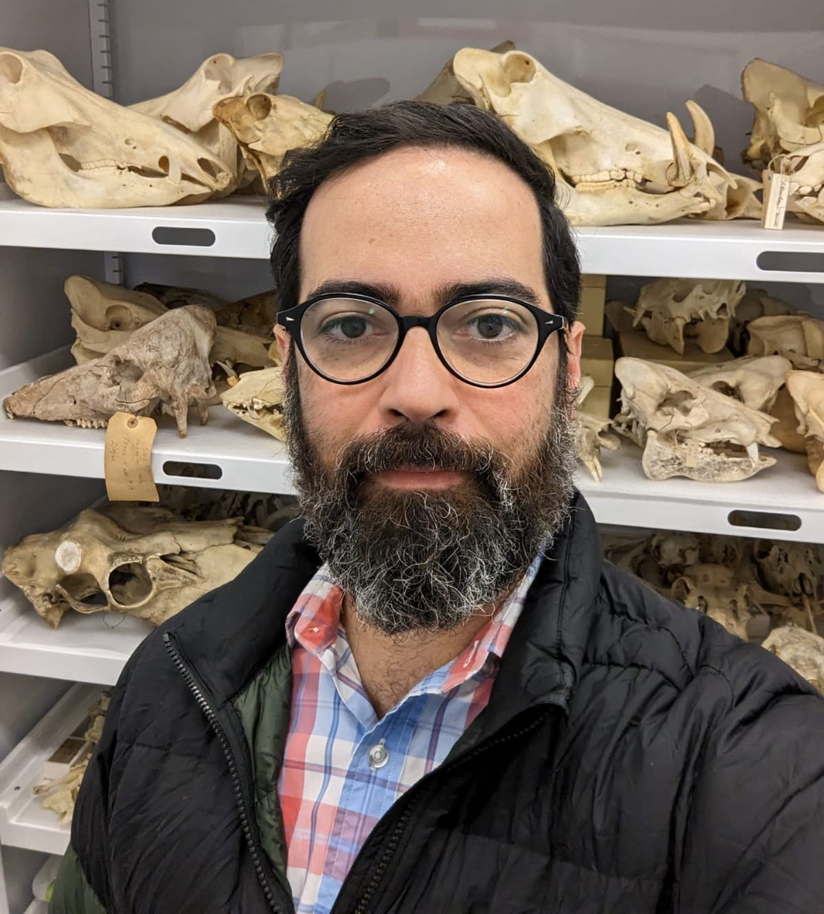
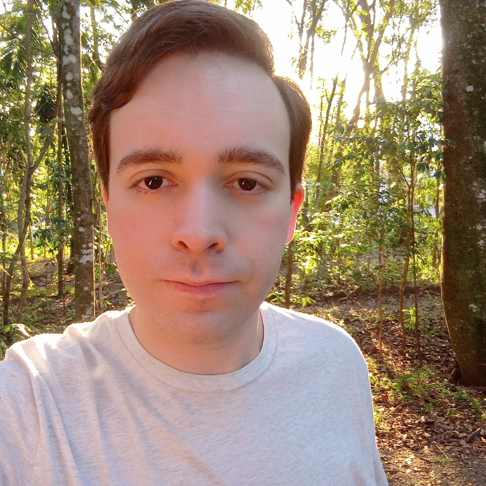
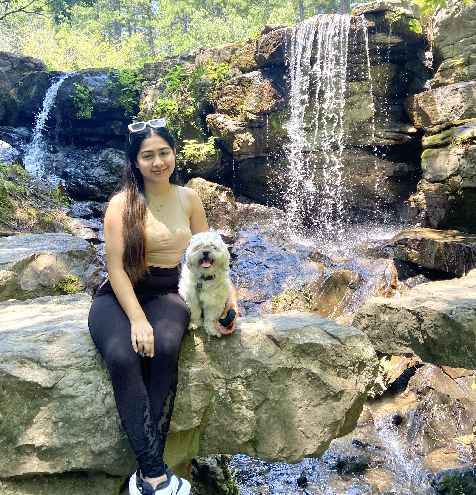
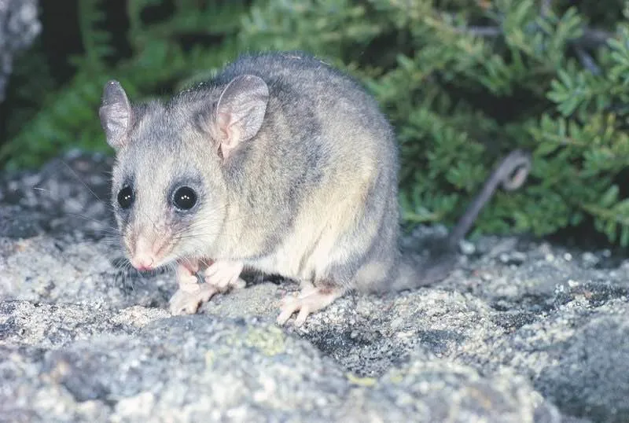
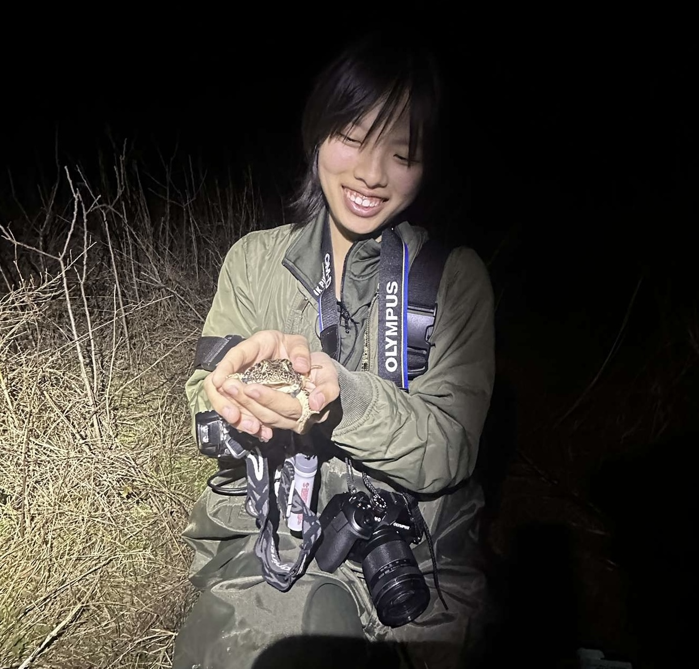

Principal investigator

Fabio A. Machado
I am an Assistant Professor in Integrative Biology and curator of the Collection of Vertebrates (COV) at Oklahoma State University. My background is in mammalogy, morphometrics, quantitative genetics, phylogenetic comparative methods and systematics.
Office: LSW 304/305
Contact: fabio.machado@okstate.edu
Graduate students

Jonathan Maycol Branco
I am a PhD student in Integrative Biology at Oklahoma State University. My background is in animal ecology, data science, one health and science outreach. I am particularly interested in the effects on wildlife's ecology and physiology caused by environmental factors such as landscape configuration, climate change, and contaminants.

Simran Baruwal
Simran is a PhD student at the EMORPH2 lab. She is interested in investigating drivers of diversification at macroevolutionary scales.

Andrew Hughes
I am a Master’s student in Integrative Biology at Oklahoma State University. I am interested in mammalogy, morphology, anthropogenic effects on fauna, and biogeography. I have a background in mammalogy and collections.

Kayleen Sugianto
I’m a zoology major here at OSU with a drive to show the world how incredible wildlife is! I joined the research world the summer of my sophomore year of college, working on cricket and frog projects. Now, as I begin my adventure into graduate school, I am to study the painted lady butterflies and what effects climate change has on them. Besides the busy life of a researcher and student, I enjoy spending time with family and friends, and have a passion for baking!

Shradha Suman Yadav
I am a PhD student in EMORPH2 lab, with the background in environmental science, wildlife conservation, and comparative biomechanics. My research interest centers on evolutionary morphology, with a focus on understanding how morphological traits evolve in relation to ecological and functional pressures.
Undergraduate researchers

Carina Mendeck
Carina is an undergraduate researcher at Oklahoma State University studying dental variation in South American foxes. Her next project will investigate the evolution of claws in Carnivora.
Calee Lyon
Calee is an undergraduate researcher at Oklahoma State University using CT scans to study variation in three shrew skulls.